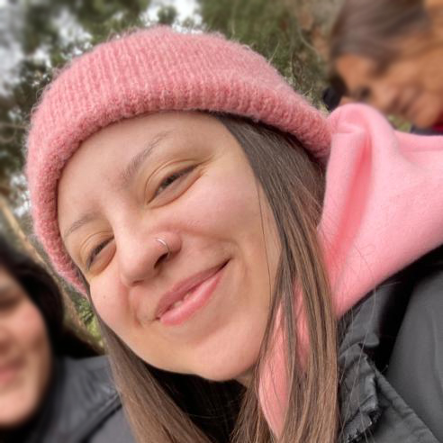

.-Curriculum Vitae-.

María Elena Villar Rodríguez
Resumen
Soy una profesional formada en competencias. Domino con experiencia las principales órdenes gráficas (normalización y diagramación de textos e imágenes).
He realizado trabajos de diseño editorial (libros y revistas), diseño para-editorial (volantes, catálogos, memorias, pendones) y diseño online (email marketing, gráficas web y rrss).
También puedo conceptualizar imágenes gráficas según requerimientos de contenido, grupo y mercado objetivo.
Datos personales
- Nombre: María Elena Villar Rodríguez
- Lugar de nacimiento: Santiago, Chile.
- Fecha de nacimiento: 28 de Diciembre de 1989.
Formación
- 2007: PSU Rendida.
- 2009-2011: Enseñanza Superior. Técnico de Nivel Superior en Diseño Editorial. Universidad Tecnológica de Chile Inacap.
- 2014: Capacitación nivel básico. Web, multimedia y animación. Digicap capacitación digital.
Experiencia Laboral
- 2011-2014: BNamericas.
- 2014-2015: D3D Studio.
- 2016-2017: Cenit International Consultores S.A.
- 2015-2023: SDmed.